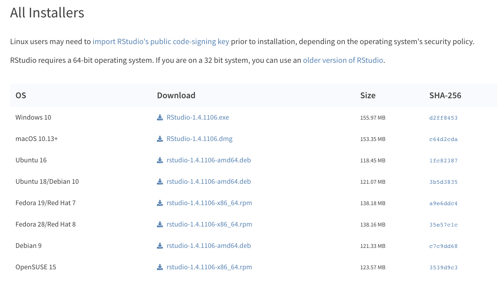
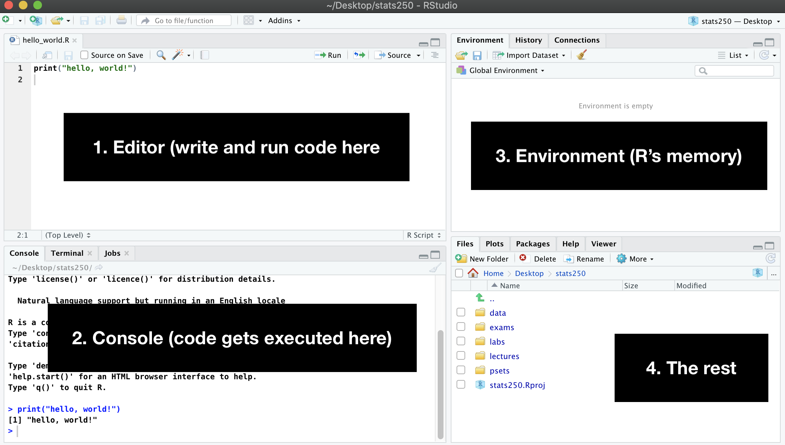

Why R Studio?
R Studio is an integrated development environment (IDE) that makes it a lot easier to use and manage R. You can write code to do everything from analyzing data to building apps and websites. (This website was built entirely in R Studio.) After you download the app, scroll down to see a demo.
⚠️ Is R installed?
Before installing R Studio, you first need to install R.
Instructions
- Go to the download page.
- Choose the link for your operating system, then follow the download instructions.

⚠️ Install Local
Do not install software like R on your Suffolk One Drive account or any other cloud service. Make sure you install on your computer’s hard drive.
ℹ️ Stay up to date
We recommend that you update your operating system to its latest version. Otherwise you may run into problems installing R or packages for R.
Navigating R Studio
Open R Studio and any file and you will see are four panels:
- The editor (where you write and edit files)
- The console (where code is executed)
- The environment (R’s memory: data sets, functions, objects, and more)
- The rest (file manager, plots, packages, viewer)

You can customize pretty much everything in R Studio, including the appearance (Monokai forever!). More details here.